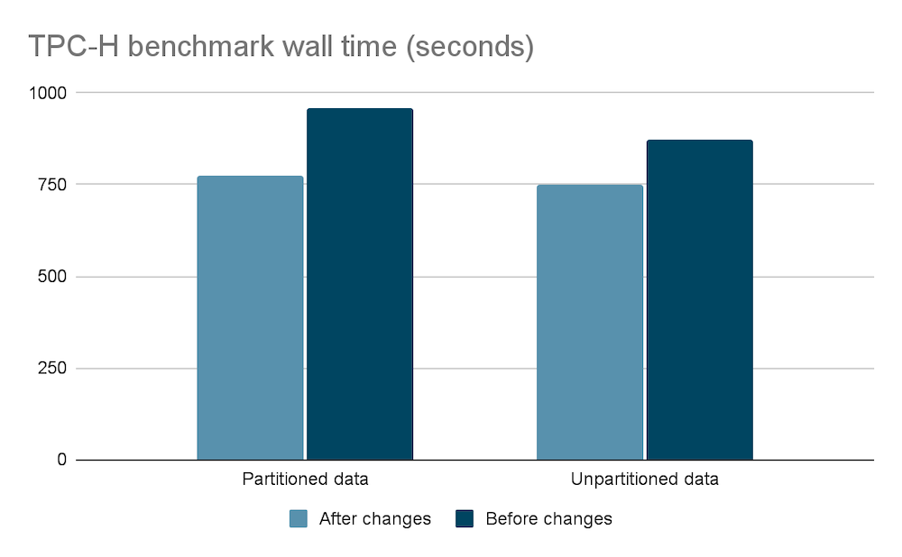
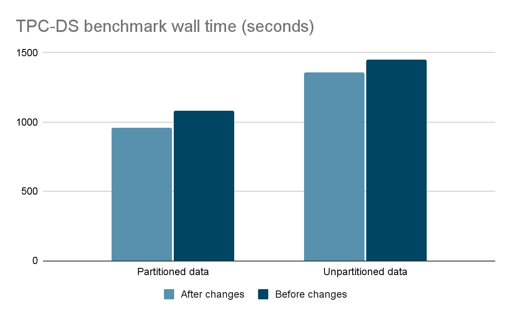

While working on performance enhancements at Starburst, engineering focuses on reducing the amount of time that a CPU has to work on a given query. This is referred to as CPU time. CPU time is a stable metric that reflects real performance in the case of concurrent queries.
As the CPU time for an individual query drops so can Trino’s ability to utilize the CPUs fully; this can be due to scheduling as an example. The result is that a reduction in CPU time does not always translate to a reduction in latency or wall time. After a year of major performance enhancements we decided to focus our efforts on increasing CPU utilization and reducing query wall time.
CPU utilization enhancements
The most significant change is that Trino’s
query.execution-policy now
defaults to phased rather than all-at-once. The all-at-once approach
scheduled all query stages in a single shot with the goal of simplicity and
reduced latency. The phased execution policy was later added as a configuration
option which would schedule only the stages of a query which can can make
progress.
Recently, Karol Sobczak made the observation that the phased execution policy can schedule stages that can create subsequent stages which can’t make progress. That issue defeats the purpose of the phased execution policy. Fixing this logic resulted in reduced latency, and the ability to set the phased execution policy as default.
Other improvements
Other significant changes include adaptively setting task.concurrency to the
number of physical cores on a node and increasing the default value of
hive.split-loader-concurrency. We have observed that hyper-threaded cores do
not translate to improved query performance. Increasing the split loader
concurrency helps the engine process partitions and small files more quickly.
Benchmark results
We were impressed with a 20% reduction in wall time for TPC-H partitioned data, and customers should be able to expect an average reduction of 13% in wall time based on our internal benchmarking. We have seen improvements as high as 50% for TPC-H query 12 on partitioned data.
The benchmark results were obtained by running the TPC-H and TPC-DS benchmarks with one coordinator and six worker nodes. The data was queried by the Hive connector with partitioned and unpartitioned data at 1TB scale.

While TPC-H and TPC-DS are both decision support benchmarks TPC-H is said to be more representative of ad hoc queries which tend to be simpler.

Ready for you
The best part about these changes mentioned above is that they do not require
any changes. They will be available out of the box in the upcoming LTS release.
Just remember that the software makes use of existing configurations so you
might need to unset query.execution-policy and task.concurrency.
Enjoy the even faster query processing.
Starburst Performance Team